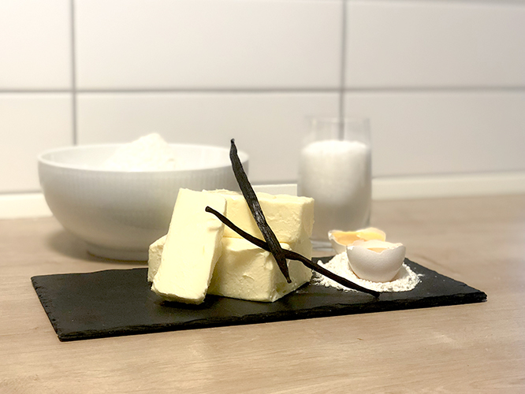

Sukker, vaniljekerner og æggeblommer tilsættes, og dejen samles.
Dejen køres gennem kødmaskinen med skiven med stjernemønster.
Formes til kranse, der sættes på en bageplade med bagepapir.

Tip: Hvis du ikke har en kødhakker eller småkagesprøjte, kan du trille dejen ud i lange pølser på en lillefingers tykkelse og forme dem til kranse, hjerter eller kringler.